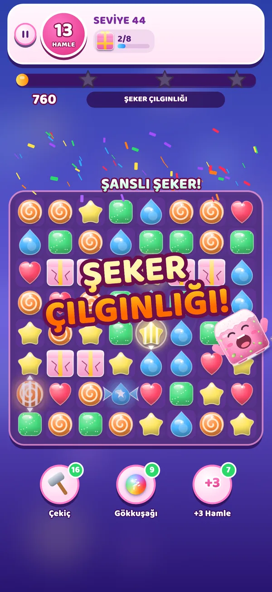

🍬 Şeker Küpler Yeni
Yan yana iki şekeri değiştir, üç ve daha fazlasını diz. Çizgili şekerler, paketli şekerler, gökkuşağı topları ve şeker çılgınlığı. Buzlar, zincirler, kapalı kutular ve süreli bombalarla 60 seviye.
Hikâye İstanbul'da geçer: Eminönü'nden Adalar'a, her bölüm şehrin gerçek tarihinden bir sayfa açar.